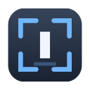

Three small utilities for
people who leave things running.
Menu bar tools that get out of the way. Everything runs on your Mac — no accounts, no telemetry, and not one of them can open a network connection.
Menu bar tools that get out of the way. Everything runs on your Mac — no accounts, no telemetry, and not one of them can open a network connection.
Focus follows your eyes
Moves keyboard focus to the screen you're looking at, so you stop clicking before you type. Works across monitors, windows and split panes.
Learn more →
Awake while it works
Keeps your Mac awake only while something is genuinely busy — a render, a build, a download — then lets it sleep. No more guessing timers.
Learn more →
Lock the Mac, not the work
Locks your machine when you step away while your builds, agents and uploads keep running behind the lock screen.
Learn more →No Dock icons, no windows in your way. A glance tells you what each one is doing.


 Tue 14:32
Tue 14:32
Each icon changes with state — filled while holding, outlined when idle, a warning when something needs you.
Every app can explain what it sees from the terminal, so a settings problem never gets mistaken for a permissions one.
They solve adjacent problems and work well together.
Always on in the background, inferring from activity whether to hold sleep. You never think about it. It can let go if a process goes quiet.
You arm it when you walk away. It locks the screen and holds regardless, until the condition you chose. Use it when leaving the machine matters.
Three small tools, one set of principles.
None ships with the network entitlement. macOS itself prevents them from opening a connection.
No trial, no licence key, no upsell. Nothing to sign up for.
Universal binaries under 1 MB each, idling near zero CPU.